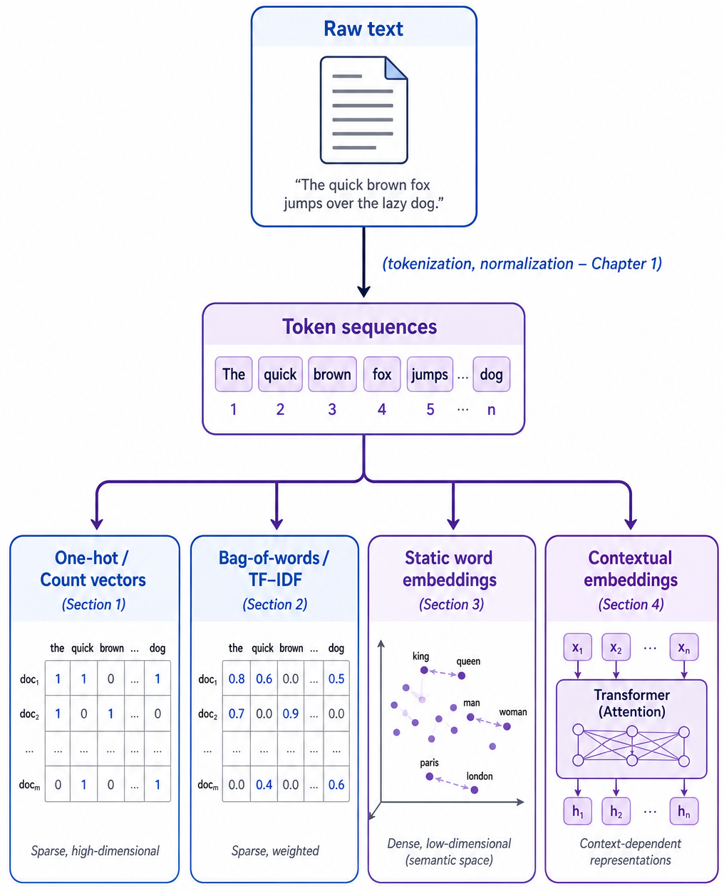

Remark
These lecture notes are in early access and will continue to evolve based on classroom experience and feedback.
2. Text Representations and Vectorization#
Natural language is inherently symbolic and structured, but most machine learning models expect fixed-length numerical vectors. This chapter focuses on how we turn text into vectors that can be fed into classical and neural models.
Consider two short sentences:
“The river burst its banks after days of heavy rain.” “Flooding damaged crops and livestock in the lowland areas.”
A human reader immediately understands these sentences describe related events. A machine learning model, however, can only process numbers. The bridge between these two worlds is a text representation: a principled mapping from words and documents to points in a mathematical space.
The choice of representation has a profound impact on every downstream task:
A poor representation may make similar documents look completely different.
A rich representation can allow a simple linear classifier to outperform a complex model trained on a weak one.
In retrieval and semantic search, representations determine which documents are found.
This chapter traces the arc from the simplest possible representations (individual indicator bits) to the richest currently available (contextual neural embeddings), building intuition at each step.
In this chapter, you will learn to:
Explain why text must be vectorized for use in machine learning models.
Compare one-hot, bag-of-words, and TF–IDF representations, and reason about when each is appropriate.
Compute TF–IDF weights by hand for a small corpus and interpret the results.
Describe the intuition behind distributional word embeddings and their advantages over sparse representations.
Use pretrained word vectors to find nearest neighbors and perform vector arithmetic.
Explain what makes contextual embeddings (e.g., from BERT) different from static word embeddings.
Implement basic vectorization pipelines in Python and interpret their outputs on small corpora.
Choose an appropriate encoder for a given task, balancing accuracy, interpretability, and computational cost.
In Chapter 1, we focused on what NLP is, how to acquire and preprocess text, and how linguistic structure relates to modern models. This chapter deepens the second course theme—text preprocessing and representations—by making the step from cleaned tokens to numerical features explicit. These representations will be used throughout later modules: in Core NLP modeling (Chapter 3) for supervised classifiers and sequence labelers; in Applied neural NLP and LLM modules to compare classical representations against learned embeddings; and in Agentic AI settings, where embeddings and vector spaces underpin retrieval and tool-using workflows.
Connection to Chapter 1
Chapter 1 introduced preprocessing steps such as tokenization, stopword removal, stemming, and lemmatization. The quality of those preprocessing decisions directly affects the quality of the representations built in this chapter. Before vectorizing, always ask: Has the text been cleaned and normalized consistently?
The chapter is organized into four sections, each corresponding to a teaching session and accompanied by Jupyter-based labs and practice notebooks. The figure below sketches the progression from raw text to rich representations:
{kind=link}

Fig. 2.1 The chapter’s text representation pipeline, showing the progression from raw text through tokenization and normalization to token sequences, then to one-hot/count vectors, bag-of-words/TF–IDF, static word embeddings, and contextual embeddings#
From tokens to vectors: classical encoders. We introduce the fundamental idea of representing text as numerical vectors, starting with one-hot encodings and count-based document–term matrices. These simple representations build conceptual scaffolding for everything that follows.
Bag-of-words and TF–IDF in practice. We extend raw counts into full document-term matrices and introduce TF–IDF weighting as a principled way to highlight characteristic terms. We derive the formulas from first principles, work through a manual example, and demonstrate classification pipelines on small corpora.
Word embeddings and distributional semantics. We move from high-dimensional sparse vectors to dense, low-dimensional word embeddings (word2vec, GloVe, fastText). You will see how co-occurrence patterns give rise to semantic structure in vector space—including the famous vector-arithmetic analogy—and learn how to use pretrained embeddings in downstream models.
Contextual embeddings and BERT. Finally, we introduce BERT-style encoders as a bridge toward LLMs. We explain how self-attention produces context-dependent token vectors, compare pooling strategies for sentence-level representations, and survey the broader family of pretrained transformers available through the Hugging Face ecosystem.
Throughout the chapter, code examples accompany each section. Each section includes short, focused Python snippets that illustrate key workflows—such as building sparse matrices with scikit-learn, computing TF–IDF weights, loading pretrained embeddings with gensim, and extracting contextual vectors with transformers.